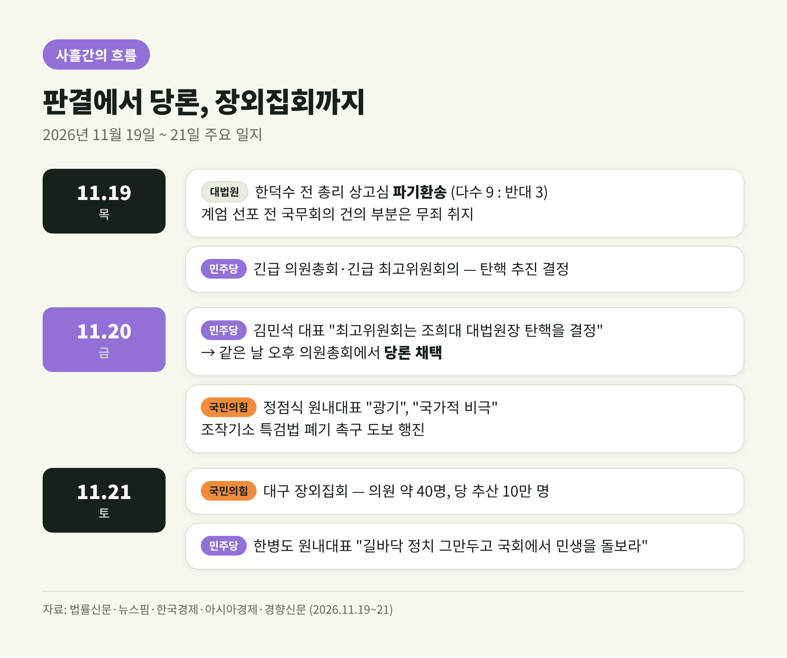
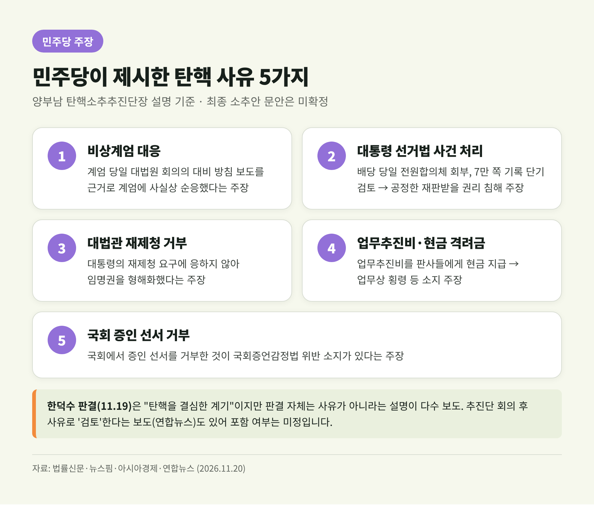
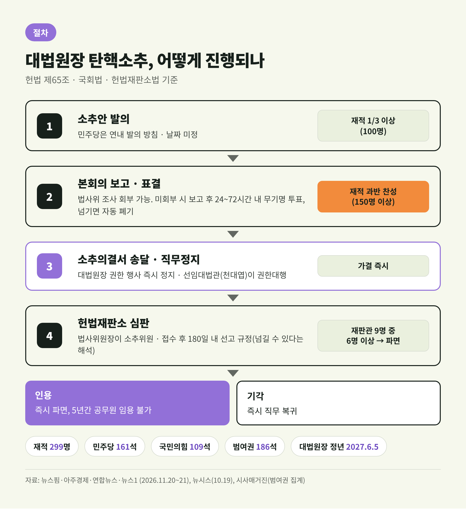
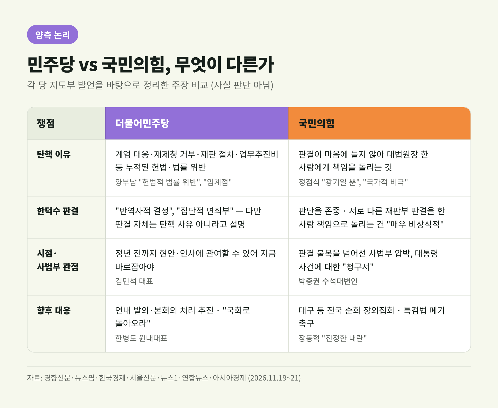
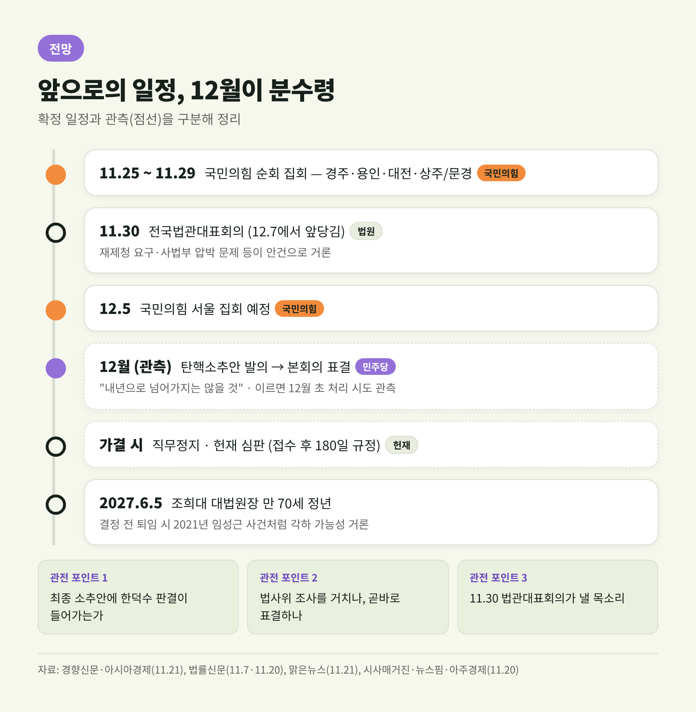

조희대 대법원장 탄핵소추, 민주당 당론 채택으로 연내 발의 추진
이번 글에서는 더불어민주당이 조희대 대법원장 탄핵소추를 당론으로 정한 일을 정리해 보겠습니다. 무엇이 결정됐고 어떤 사유가 제시됐는지, 국회와 헌법재판소에서 어떤 절차가 남았는지 차례로 짚습니다. 여야의 주장과 법조계 반응도 함께 담았습니다.
세 줄 요약
- 민주당은 11월 20일 의원총회에서 조희대 대법원장 탄핵소추를 당론으로 채택했습니다. 발의는 "내년으로 넘어가지는 않을 것"이라고 밝혔습니다.
- 민주당은 161석으로 단독 의결이 가능합니다. 가결되면 대법원장 직무가 곧바로 정지되고, 헌재가 대법원장 탄핵을 심판하는 첫 사례가 됩니다.
- 국민의힘은 "광기", "국가적 비극"이라 반발하며 21일 대구에서 장외집회를 열었습니다. 법조계에서는 파면까지 이어지기 어렵다는 관측이 많고, 민주당 안에서도 '기각 역풍'을 걱정하는 목소리가 나옵니다.
■ 무슨 일이 있었나 — 판결 하루 만의 당론 채택
계기는 11월 19일 대법원 판결이었습니다. 대법원 전원합의체는 한덕수 전 국무총리의 내란 중요임무 종사 사건 상고심에서 원심(징역 15년)을 깨고 사건을 서울고법으로 돌려보냈습니다.
판결은 한쪽 방향만 가리키지 않았습니다. 12·3 비상계엄이 형법상 내란에 해당한다는 점은 인정했습니다. 국무위원 서명 종용, 허위공문서 작성·위증 등 혐의에 대한 유죄 판단도 유지했습니다. 다만 계엄 선포 전 국무회의 개최를 건의한 행위는 국헌문란 목적이 충분히 증명되지 않았다고 봤습니다. 다수의견은 9명, 반대의견은 3명이었습니다.
민주당은 그날 밤 긴급 의원총회와 긴급 최고위원회의를 잇달아 열었습니다. 이튿날 오전 김민석 대표는 최고위원회의에서 "당 최고위원회는 조희대 대법원장 탄핵을 결정했다"고 밝혔습니다. 판결을 "반역사적 결정"이라 부르며 "내란과 내란 부역 정당화와는 결코 타협할 수 없다"고 했습니다. 같은 날 오후 의원총회에서 탄핵소추가 당론으로 채택됐습니다.
양부남 탄핵소추추진단장은 발의 시점을 두고 "가능한 한 빨리" 하겠다고 했습니다. 날짜는 정하지 않았지만 해를 넘기지 않겠다는 입장입니다. 추진단에는 전용기·김기표·김동아·이건태·이용우·이주희·노종면 의원 등이 이름을 올렸습니다.

■ 민주당이 내세운 탄핵 사유 다섯 가지
양부남 단장이 밝힌 사유는 다섯 갈래입니다. 모두 민주당의 주장입니다.
- 비상계엄 대응: 계엄 당일 대법원 심야 회의에서 계엄 매뉴얼에 따른 대비 방침이 논의됐다는 보도를 근거로, 계엄에 사실상 순응했다고 주장합니다.
- 이재명 대통령 공직선거법 사건 처리: 소부 배당 당일 전원합의체에 회부했고, 7만 쪽 기록을 짧은 기간에 검토했다며 공정한 재판을 받을 권리를 침해했다고 봅니다.
- 대법관 재제청 거부: 대통령의 재제청 요구에 응하지 않아 임명권을 형해화했다는 주장입니다.
- 업무추진비·현금 격려금: 업무추진비를 판사들에게 현금으로 지급한 것이 업무상 횡령 등에 해당할 수 있다고 봅니다.
- 국회 증인 선서 거부: 국회증언감정법 위반 소지를 문제 삼았습니다.
눈여겨볼 대목이 있습니다. 한덕수 판결은 탄핵을 결심한 계기였지만, 양 단장은 판결 자체는 사유가 아니라고 선을 그었습니다. 다만 연합뉴스는 양 단장이 추진단 회의 뒤 이 판결을 사유로 '검토'하겠다고 입장을 바꿨다고 전했습니다. 최종 소추안에 무엇이 담길지는 아직 확정되지 않았습니다.
계엄 대응 사유에는 참고할 사실이 하나 있습니다. 제2 종합특검은 지난 8월, 조 대법원장의 '내란 가담' 고발 사건을 "새로운 사실관계가 확인되지 않아" 각하했습니다.

■ 왜 중요한가 — 헌정사에 전례가 없는 길
대법원장 탄핵소추 시도가 처음은 아닙니다. 1985년 신한민주당이 유태흥 대법원장 탄핵안을 발의했지만 찬성 95표, 반대 146표로 부결됐습니다. 2009년 신영철 대법관 탄핵안은 72시간 안에 표결되지 않아 자동 폐기됐습니다.
예전에는 소수 야당이 발의했다가 본회의 문턱에서 멈췄습니다. 지금은 과반 여당이 당론으로 밀고 있습니다.
그래서 이번에는 결과가 다를 수 있습니다. 가결되면 국회가 대법원장 탄핵소추를 의결한 첫 사례가 됩니다. 헌법재판소가 대법원장 탄핵을 심판하는 것도 처음입니다. 헌재에서 대법원장이 파면된 사례는 아직 없습니다.
입법부가 사법부 수장의 직무를 멈추는 일인 만큼 삼권분립을 둘러싼 논쟁도 불가피합니다. 민주당은 "헌법적 법률 위반"을 바로잡는 책임이라고 말합니다. 국민의힘은 판결에 대한 "보복"이라고 맞섭니다.
■ 절차와 의석 — 국회는 열쇠, 헌재는 관문
대법원장 탄핵소추는 헌법 제65조를 따릅니다. 재적의원 3분의 1 이상이 발의하고, 과반이 찬성하면 의결됩니다. 대통령 탄핵(발의 과반, 의결 3분의 2)보다 문턱이 낮습니다.
현재 22대 국회 재적의원은 299명입니다. 과반은 150명이고, 민주당은 161석입니다. 국민의힘은 109석이라 표결만으로는 막을 수 없습니다. 조국혁신당·진보당 등을 합친 범여권은 186석으로 집계됩니다.
절차는 이렇게 이어집니다. 소추안이 본회의에 보고되면 법사위 조사에 넘길 수 있습니다. 넘기지 않으면 보고 후 24시간에서 72시간 사이에 무기명 투표를 해야 하고, 이 기간을 넘기면 자동 폐기됩니다. 가결돼 소추의결서가 송달되면 대법원장의 권한 행사는 즉시 정지됩니다. 권한대행은 선임대법관인 천대엽 대법관이 맡습니다.
헌재는 접수일부터 180일 안에 결정해야 합니다. 다만 이 기한은 강행 규정이 아니어서 넘길 수 있다는 해석이 있습니다. 재판관 9명 중 6명 이상이 찬성해야 파면되며, 기각되면 곧바로 직무에 복귀합니다.
변수는 임기입니다. 조 대법원장은 2027년 6월 5일 만 70세 정년을 맞습니다. 11월 20일 기준 남은 임기는 197일입니다. 2021년 임성근 부장판사 사건에서 헌재는 임기 만료 퇴직을 이유로 심판 청구를 각하했습니다.

■ 국민의힘의 반발과 대구 장외집회
국민의힘은 즉각 반발했습니다. 정점식 원내대표는 "재판 결과가 마음에 들지 않는다고 대법원장 한 사람을 상대로 반역이니 내란이니 운운하면서 탄핵을 추진하는 것은 광기일 뿐"이라고 했습니다. 집권 여당이 재판 취소와 탄핵에 휩싸였다며 "국가적 비극"이라고도 했습니다. 판결이 나온 사건과 재판부가 서로 다른데 책임을 한 사람에게 돌리는 것은 "매우 비상식적"이라는 주장도 폈습니다.
박충권 수석대변인은 이재명 대통령 사건 파기환송과 재제청 거부에 대한 "청구서"라는 의심을 제기했습니다. 다른 야권도 비판에 가세했습니다. 개혁신당 이동훈 수석대변인은 전원합의체 판결을 한 사람의 책임으로 몰 수 없다고 했습니다. 무소속 한동훈 의원은 "친위쿠데타이자 내란"이라고 했습니다.
21일에는 대구 중구 현대백화점 앞 광장에서 장외집회가 열렸습니다. 이름은 '100% 위헌! 이재명 탈옥법 대구·경북 규탄대회'였습니다. 장동혁 대표와 의원 약 40명이 참석했고, 당은 10만 명이 모였다고 밝혔습니다. 장 대표는 대법원장 탄핵 추진을 "진정한 내란"이라 규정했고, 이 대통령에 대해서는 "탄핵만이 답"이라고 했습니다. 정점식 원내대표는 조작기소 특검법을 "친위 쿠데타이자 의회 쿠데타"라고 불렀습니다.
민주당은 같은 날 응수했습니다. 한병도 원내대표는 "길바닥 정치를 그만두고 국회에서 민생을 돌보라"고 했습니다. 장 대표의 "국민을 속여 청와대를 점거" 발언은 "국민의 선택을 모욕하고 대한민국 헌정질서를 부정하는 발언"이라고 비판했습니다. 조계원 대변인은 장외집회를 "유랑극단의 행태"라고 했습니다.

■ 사법부와 법조계 — 판사들의 우려, 학계의 회의론
대법원은 공식 입장을 내지 않았습니다. 조 대법원장도 출근길 질문에 답하지 않았습니다.
법원 안의 반응은 익명으로 전해졌습니다. 한 부장판사는 판결 불만을 이유로 한 탄핵은 "재판 외압"으로 받아들여질 수밖에 없다고 했습니다. 한 고법 부장판사는 "정치와 사법의 역할을 혼동하는 것"이라며 다른 재판부가 위축될 수 있다고 우려했습니다.
학계와 변호사 사이에서는 탄핵 사유의 중대성을 의심하는 목소리가 많았습니다. 지성우 성균관대 법학전문대학원 교수는 "중대한 사유가 하나도 없다"며 "정치적 목적의 업무 정지용 탄핵"이라고 했습니다. 한상희 건국대 법학전문대학원 교수는 사법권 독립을 고려하면 재판 관련 사안을 중대한 법 위반으로 보기 어렵다고 했습니다. 이석연 전 국민통합위원장은 "헌법과 법률에 없는 재제청 요구"를 거부한 것을 사유로 삼을 수 없다고 봤습니다.
판단을 유보하는 견해도 있습니다. 전 헌법연구관 출신 노희범 변호사는 선거법 사건 처리나 재제청 거부를 직권남용·책무 위반으로 볼 "여지는 있지만" 탄핵 사유인지는 "논란의 여지"가 있다고 했습니다.
탄핵 쪽 법리는 주로 법조인 출신 민주당 의원들이 펴고 있습니다. 검사 출신인 양부남 단장은 "헌법적 법률 위반"이 쌓여 "임계점"을 넘었다고 했습니다. 김기표 의원은 지난 9월 재제청 거부가 사법부를 정치 한복판으로 끌어들였다며 "대법원장 자격 없다"고 했습니다. 다만 이번 당론 채택 뒤 사유를 지지하는 학계·법조계의 실명 견해는 확인한 보도에서 찾지 못했습니다.
법조계 일각은 직무정지 효과에 주목합니다. 가결되면 조 대법원장은 전원합의체 재판, 천대엽 대법관 후임 제청, 내년 초 정기 법관 인사에서 빠지게 됩니다. 이를 두고 "손발 묶기용 정치 행위"라는 해석이 나옵니다. 김민석 대표는 반대로, 정년 전까지 대법원 현안과 인사에 관여할 수 있으니 지금 바로잡는 것이 의미 있다고 주장합니다.
■ 민주당 안의 '기각 역풍' 우려
당론이 정해졌지만 민주당이 한목소리를 낸 것은 아닙니다. 19일 의원총회에서 발언한 의원 18명 가운데 6명이 반대 의사를 밝혔습니다. 율사 출신인 김남희·백혜련·이건태 의원은 법적 근거가 충분하지 않다고 우려한 것으로 전해졌습니다.
곽상언 의원은 공개적으로 "탄핵 당론 추진에 대해 반대한다"고 밝혔습니다. 그는 "사법부 판결은 그 자체로 탄핵 사유가 되지 않고, 대법원장이 재판장으로 진행한 판결도 마찬가지"라고 했습니다. 사유가 충분하다면 당론이 아니라 의원 개별 판단에 맡기라고도 했습니다. 사법부가 거대 여당의 탄압을 받는 피해자로 비칠 수 있다는 걱정도 덧붙였습니다.
익명의 중진 의원들은 거론된 사유로는 헌재 인용이 어렵다고 봤습니다. 기각되면 그 후폭풍이 다음 총선까지 이어질 수 있다는 우려도 나왔습니다. 서울경제는 민주당이 그동안 국정조사 검토 수준에 머문 이유로 중도층 이탈과 여론 악화에 대한 부담을 꼽았습니다.
■ 앞선 쟁점과의 연결 — 재제청 충돌, 조작기소 특검법, 법사위 보이콧
이번 당론은 갑자기 나온 결정이 아닙니다. 갈등은 지난여름 대법관 인선에서 시작됐습니다. 조 대법원장이 노태악 전 대법관 후임으로 손봉기 대구지법 부장판사를 제청하자, 청와대는 사전 합의가 없었다며 8월 28일 재제청을 요청했습니다. 대법원은 9월 22일 요청 문서에 "구체적인 사유와 헌법적 근거가 적혀 있지 않다"며 거부했습니다. 청와대는 제청권이 임명권보다 우위인 것처럼 보이는 입장은 "헌법에 위배"된다고 반발했습니다. 대법관 공석은 반년 넘게 이어지고 있습니다.
변호사단체의 시각도 갈렸습니다. 한변은 "대법원장 제청권은 결코 대통령 임명권에 종속된 권한이 아니다"라고 했습니다. 민변은 제청·동의·임명권이 서로 협력하는 구조라 어느 한쪽이 우선할 수 없다며, 대법원장에게 공석 해결을 촉구했습니다.
두 번째 축은 조작기소 특검법입니다. 이 법은 11월 6일 국회 본회의를 민주당 단독으로 통과했습니다. 대통령이 순방 중이던 18일 재가했고, 19일 공포돼 즉시 시행됐습니다. 대장동·위례·백현동, 쌍방울 대북송금, 성남FC 후원금 등 12개 항목을 최장 200일 동안 수사합니다. 법사위 심사 과정에서 공소취소권과 이첩요구권은 빠졌습니다.
국민의힘은 이 법을 '이재명 탈옥법'이라 부릅니다. 대통령이 자신과 관련된 사건의 특검을 임명하는 이해충돌이라는 주장입니다. 지난 9일에는 법사위 일정 보이콧을 선언했고, 법사위 소관 2027년 예산 8조3600억 원의 심사 차질 우려가 나왔습니다. 민주당은 이를 "민생 인질극"이라 비판했고, 특검법에 공소 취소권이 없는데도 내용을 왜곡한다고 반박합니다.
결국 특검법, 법사위 보이콧, 장외집회, 대법원장 탄핵이 한 줄로 엮였습니다. 장동혁 대표는 특검법을 "입법 내란", 대법원장 탄핵을 "의회 쿠데타"라고 부르며 두 사안을 함께 겨냥합니다. 민주당은 특검법을 지난 정부의 표적 수사·조작 기소 의혹을 다시 살피는 장치로, 탄핵은 "내란 부역 정당화"와 타협하지 않겠다는 의지로 설명합니다.
■ 앞으로의 일정 — 12월이 분수령
민주당은 연내 발의와 연내 본회의 통과를 목표로 합니다. 이르면 12월 초 본회의에서 처리를 시도할 수 있다는 관측이 나옵니다. 조국혁신당은 더 빨리, 즉시 표결하자고 요구하고 있습니다.
그 사이 일정도 촘촘합니다. 11월 30일에는 전국법관대표회의가 열립니다. 원래 12월 7일이던 회의를 판사들의 요구로 일주일 앞당겼습니다. 재제청 요구와 사법부 압박 문제가 안건으로 거론됩니다. 국민의힘은 25일 경주, 26일 용인, 28일 대전, 29일 상주·문경을 거쳐 12월 5일 서울에서 집회를 이어갈 계획입니다.

헌재 단계로 넘어가면 시간과의 싸움이 됩니다. 180일 기한을 다 쓰면 정년과 거의 맞물립니다. 결정 전에 퇴임하면 임성근 사건처럼 각하될 가능성도 거론됩니다. 그렇게 되면 남은 임기 대부분이 직무정지 상태로 흘러갈 수 있습니다.
관전 포인트는 세 가지입니다. 최종 소추안에 어떤 사유가 담기는지, 특히 한덕수 판결이 포함되는지. 법사위 조사를 거칠지, 곧바로 표결할지. 그리고 11월 30일 법관대표회의가 어떤 목소리를 낼지입니다.
정리하면 이렇습니다. 민주당은 누적된 헌법·법률 위반을 바로잡는 책임이라 말합니다. 국민의힘은 판결에 대한 보복이자 사법부 겁박이라고 말합니다. 국회 표결의 결과는 의석이 정하지만, 탄핵의 정당성은 결국 헌법재판소가 가립니다.
"국회는 소추하고, 판단은 헌재가 한다" — 이 단순한 원칙이 앞으로 몇 달 동안 가장 무겁게 시험받을 것입니다. 누가 옳았는지 묻는다면, 그 답은 정치가 아니라 결정문에서 나와야 한다고 생각합니다.
참고자료
- 뉴스핌, 「민주당, 조희대 탄핵소추 '연내 추진' 공식화…국민의힘 "광기·국가적 비극"」 (2026-11-20) https://www.newspim.com/news/view/20261120001168
- 뉴스핌, 「[뉴스분석] 조희대 탄핵 절차 돌입…민주당 단독 가결 가능, 헌재 판단이 관건」 (2026-11-20) https://www.newspim.com/news/view/20261120000253
- 법률신문, 「與, 의총서 '조희대 대법원장 탄핵소추' 당론 채택」 (2026-11-20) https://www.lawtimes.co.kr/news/articleView.html?idxno=229819
- 경향신문, 「[속보] 민주당, 조희대 탄핵소추 당론 채택」 (2026-11-20) https://www.khan.co.kr/article/202611201422001
- 한국일보, 「"법관이 정치인 원하는 판결해주는 사람인가"… 조희대 탄핵 추진에 술렁이는 법원」 (2026-11-20) https://www.hankookilbo.com/news/article/A2026112012360004227
- 연합뉴스(미주한국일보 게재), 「與 당론채택에 초유의 대법원장 탄핵심판 초읽기…국힘 "광기" 반발(종합3보)」 (2026-11-20) https://www.koreatimes.com/article/11632286
- 한국경제, 「김민석 조희대 탄핵 결정…내란 정당화와 타협 없다」 (2026-11-20) https://www.hankyung.com/article/2026112093657
- 서울경제, 「신중론 접은 與, 한덕수 판결에 조희대 탄핵 공식화…野 "의회 쿠데타"」 (2026-11-20) https://www.sedaily.com/article/20116726
- 아시아경제, 「與, 조희대 탄핵 당론 확정…"한덕수 판결, 탄핵사유 아니지만 결심한 계기"(종합)」 (2026-11-20) https://view.asiae.co.kr/article/2026112015182212568
- 아주경제, 「조희대 대법원장 탄핵 추진…헌재서 가릴 '직무상 위반' 무엇인가」 (2026-11-20) https://www.ajunews.com/view/20261120140628935
- 서울신문, 「與 조희대 탄핵 추진 당론 채택에 법조계 "탄핵 사유 논란… 인용 어려울 듯"」 (2026-11-20) https://www.seoul.co.kr/news/society/2026/11/20/20261120500211
- 서울신문, 「野 "내란몰이에 사법부 철퇴…조희대 보복 탄핵 수용 불가"」 (2026-11-19) https://www.seoul.co.kr/news/politics/2026/11/19/20261119500288
- 시사저널, 「이석연 "조희대 탄핵? 대통령의 재제청 요구가 오히려 '국헌문란'"」 (2026-11-20) https://www.sisajournal.com/news/articleView.html?idxno=394846
- 시사매거진, 「186석 巨與의 '조희대 탄핵' 폭주」 (2026-11-20) https://www.sisamagazine.co.kr/article/1000000000959
- 맑은뉴스, 「與'조희대 탄핵' 당론 채택했지만…'기각 역풍' 우려」 (2026-11-21) https://www.ccnn.co.kr/news/articleView.html?idxno=24942
- 국민일보, 「곽상언, 조희대 탄핵 당론 반대…"국민이 어떻게 보겠나"」 (2026-11-21) https://www.kmib.co.kr/article/20261121500063
- 뉴스1(파이낸셜뉴스 전재), 「"손발 묶기용 정치 행위"…與 '조희대 탄핵'에 법조계 싸늘한 눈길」 (2026-11-21) https://www.fnnews.com/news/202611211223314177
- 아시아경제, 「장동혁, 대구서 "이재명 탄핵만이 답"…국힘, 조희대 탄핵 추진 규탄」 (2026-11-21) https://view.asiae.co.kr/article/2026112118300310167
- 경향신문, 「국힘, 대구서 '조작기소특검법 규탄' 장외집회」 (2026-11-21) https://www.khan.co.kr/article/202611211822001/
- 아시아경제, 「민주당, 국힘 '대구 집회'에 "막말 선동 중단하고 국회 돌아오라"」 (2026-11-21) https://view.asiae.co.kr/article/2026112119365654484
- 법률신문, 「이재명 대통령, '조작기소 특검법' 재가… 공포 즉시 시행」 (2026-11-19) https://www.lawtimes.co.kr/news/articleView.html?idxno=229668
- 경북일보, 「'조작기소 특검법'에 법사위 보이콧…8조3600억 예산 심사 차질 우려」 (2026-11-09) https://www.kyongbuk.co.kr/news/articleView.html?idxno=4090186
- 법률신문, 「'대법관 재제청' 大法·靑 정면 충돌」 (2026-09-22) https://www.lawtimes.co.kr/news/articleViewAmp.html?idxno=226807
- SBS Biz, 「조희대-靑 충돌, 변호사 단체도 '충돌'」 (2026-09-24) https://biz.sbs.co.kr/amp/article/20000336664
- 서울경제, 「김기표 "조희대 재제청 거부도 탄핵 사유…대법원장 자격 없어"」 (2026-09-28) https://m.sedaily.com/article/20095423
- 뉴시스(파이낸셜뉴스 전재), 「'조희대 탄핵' 충돌 격화…與 "탄핵 사유 충분" 野 "정권 몰락 신호탄"」 (2026-10-19) https://www.fnnews.com/news/202610190501063393
- 법률신문, 「법관회의 개최 요구 사흘 만에… 일주일 당겨 11월 30일 연다」 (2026-11-07) https://www.lawtimes.co.kr/news/articleView.html?idxno=229022
- SBS Biz, 「종합특검, 조희대 대법원장 '내란 가담 혐의' 고발사건 각하」 (2026-09-01) https://biz.sbs.co.kr/amp/article/20000332059